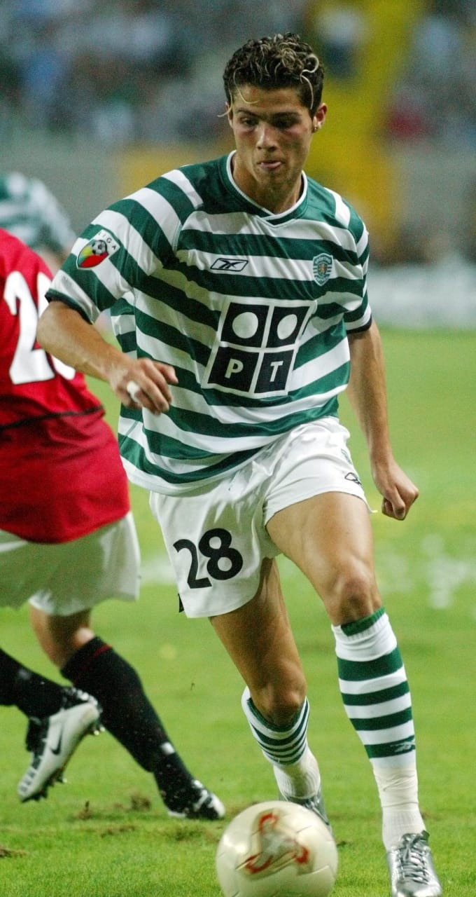
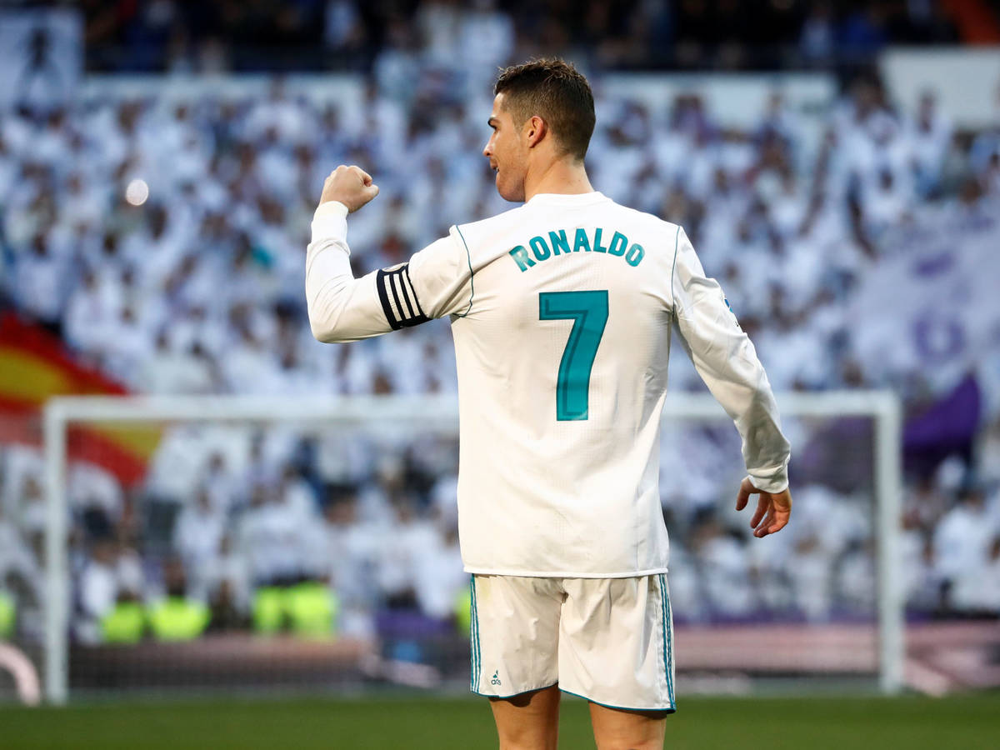
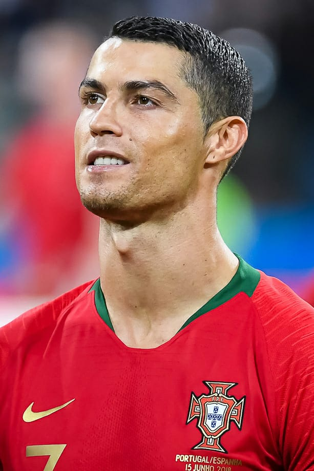
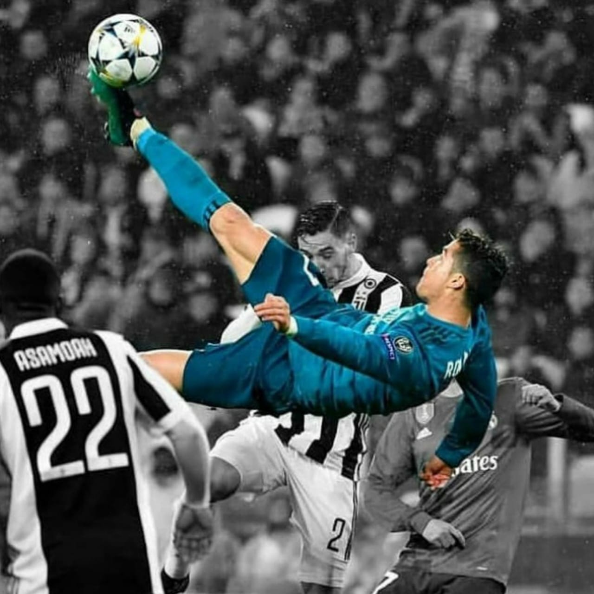
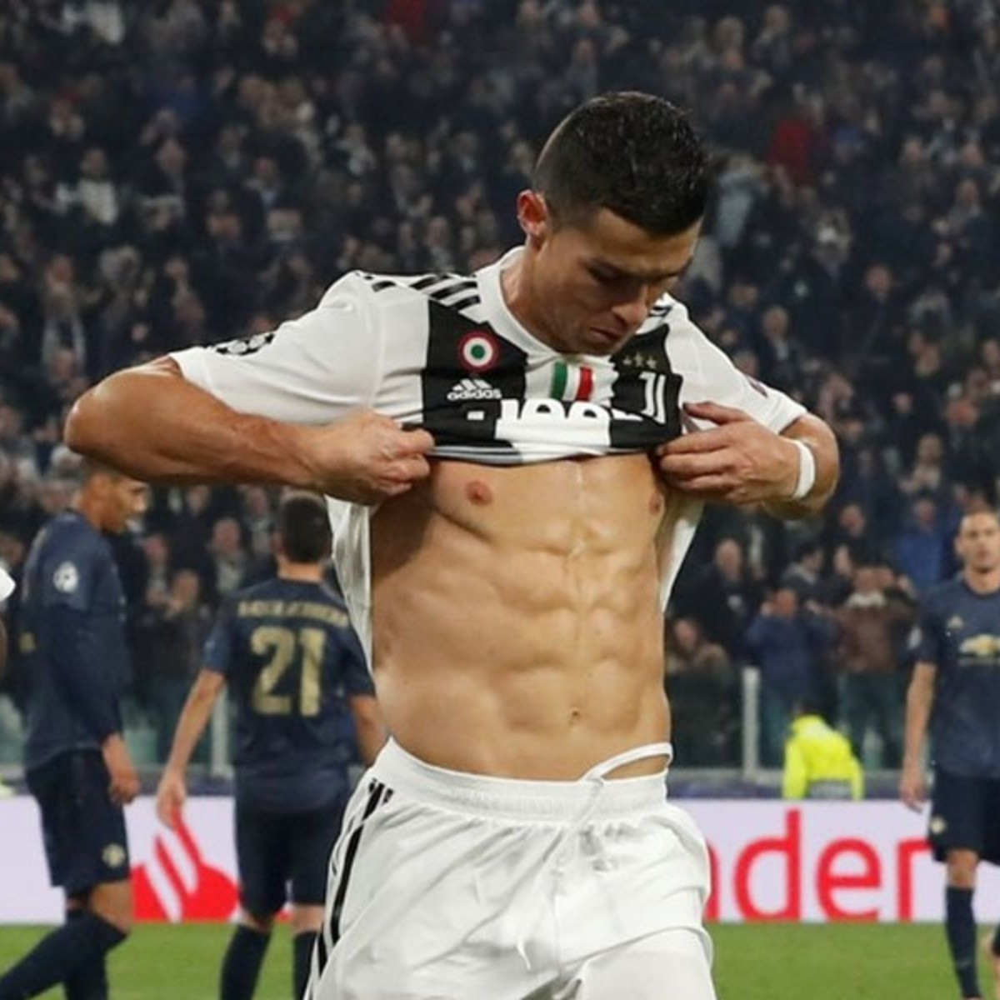
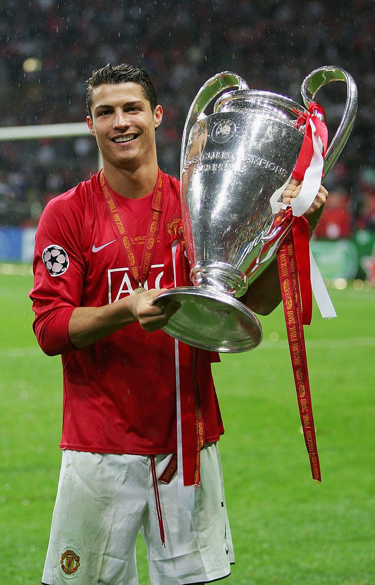
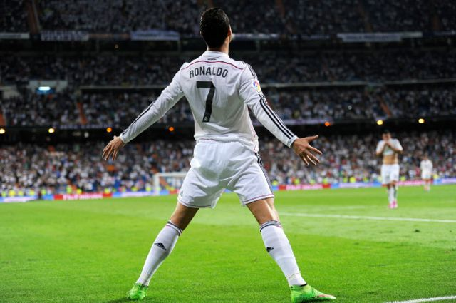

5 CHAMPIONS

Todos sabemos de la carrera de cristiano pero sin duda alguna lo más importante son sus 5 champions ganadas, una con el manchester(2008) y cuatro con el real madrid donde en esas logro el historico tricampeonado (2013,2016,2017 y 2018)
DEBUT

Su gran desarrollo futbolístico le acabó llevando a jugar sus primeros minutos como profesional cuando contaba con 17 años de edad, en el partido de clasificación para la Liga de Campeones de la UEFA del 14 de agosto de 2002 frente al F. C. Internazionale.
REAL MADRID

Traspaso más caro de la historia y primer año en España (2009-2010)
Como su clásico dorsal 7 no estaba disponible, Ronaldo ocupó la 9 en su primera temporada en España.
El 11 de junio de 2009, el club inglés aceptó la oferta de £80 millones
CRISTIANO RONALDO DOS SANTOS AVEIRO

Cristiano Ronaldo dos Santos Aveiro (Funchal, Madeira; 5 de febrero de 1985), más conocido como Cristiano Ronaldo, es un futbolista portugués que juega como delantero en la Juventus F. C. de la Serie A de Italia y en la selección de Portugal, de la cual es su capitán.
Identificado habitualmente en los medios de comunicación con el numerónimo CR7.
MEJOR GOL

Sin duda alguna el mejor gol fue aquel que marco en semifinales de champions en el 2018 donde a un pase de Carvajal perfecto Cristiano realiza una perfecta chilena y deja sin oportunidad a Buffon.
FISICO

Una de las cosas más admirables es su increible fisico ya que a sus 36 años según un estudio tiene un fisico de 23 años.
MANCHESTER UNITED

Desarrollo e irrupción en Inglaterra (2003-2007)
Para la temporada 2003-04, Ronaldo se convirtió en el primer jugador portugués en la historia del Manchester United. Ronaldo firmó un contrato con el club para 5 años al precio de €12 millones
EL MITICO "7"

Desde su llegada al Manchester Cristiano heredaría el mitico 7 donde este sería su numero en sus siguientes equipos haciendolo parte de su historia.